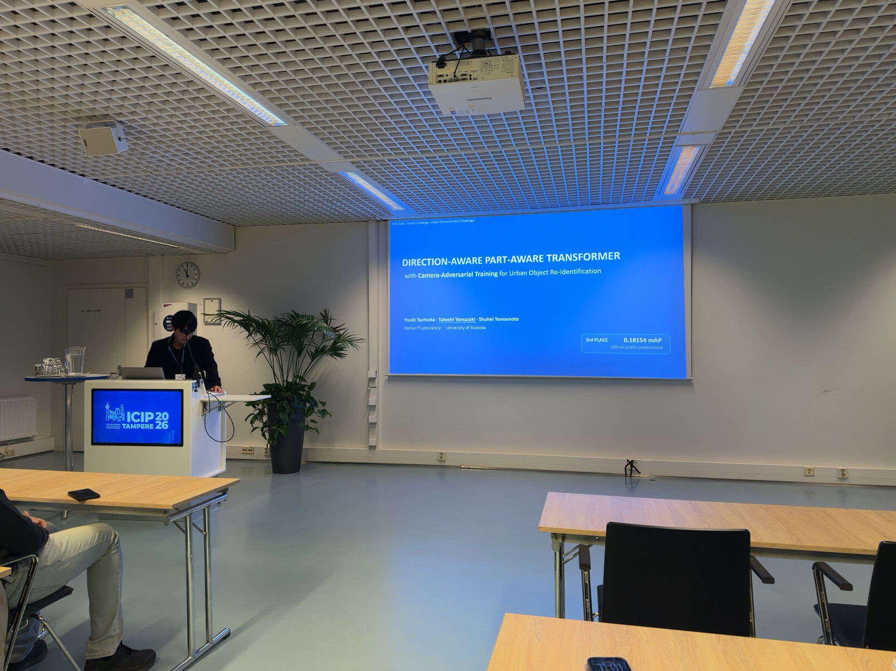

Current research
Driver Object-of-Interest Estimation
ドライブ映像、車両センサ、時間情報を統合し、運転者が関心を向ける対象をフレーム単位で推定します。Approaches · YOLO / ResNet / ViT / LSTM / sensor fusion
Graduate Researcher · University of Tsukuba
映像から人の関心を捉える。
運転中の映像と車両センサを用いて、ドライバの関心対象を推定しています。Computer Visionとマルチモーダル学習で移動支援を研究しています。
研究について連絡する ↗
01 / Featured work
IEEE ICIP 2026 · Grand ChallengeUrban Elements Re-Identification
方向差に着目した都市物体の再識別
Direction-Aware Part-Aware Transformer with Camera-Adversarial Training for Urban Object Re-Identification
公開評価（49%）で3位、非公開データによる最終評価（51%）で1位。
口頭発表 · 2026年9月14日Research
視覚情報だけでなく、センサや時間の流れも合わせて、人の関心や情報要求を理解する研究に取り組んでいます。
Current research
ドライブ映像、車両センサ、時間情報を統合し、運転者が関心を向ける対象をフレーム単位で推定します。Approaches · YOLO / ResNet / ViT / LSTM / sensor fusion
ICIP 2026 · Urban Elements ReID
異なるカメラや向き、遮蔽がある状況でも、横断歩道・信号機・標識などを同一の物体として照合します。Approaches · Part-Aware Transformer / GRL / re-ranking / TTA
Publications & talks
論文、国際会議、国内研究会での発表。
Yuuki Tachioka, Takeshi Yamazaki, Shuhei Yamamoto
山﨑 豪士, 山本 修平, 太刀岡 勇気, 寺尾 恭範
Riku Mizuguchi, Takeshi Yamazaki, Shuhei Yamamoto
Profile
Also筑波AIハッカソン 2026 · TDG賞
Contact
筑波大学大学院 情報学学位プログラム · 山本研究室